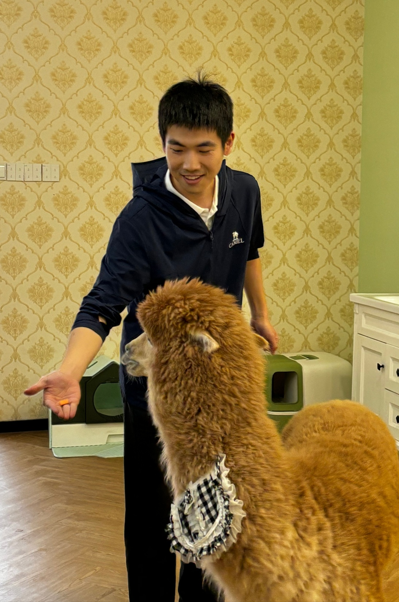
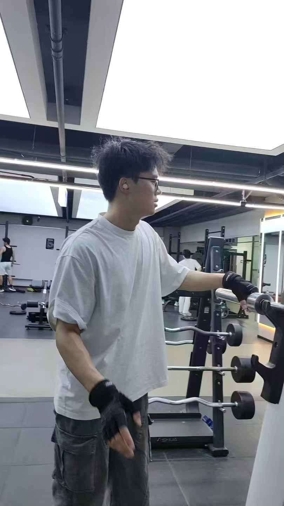

RESEARCH GROUP
“Theory is when you know everything but nothing works. Practice is when everything works but no one knowns why. In our lab, theory and practice are combined: nothing works and no one knows why.” – Unknown Quotes
SPOTLIGHT WORK | 团队工作
Human Motion Tracking via WiFi Signals (Sponsored by ChingMu Co. Ltd.)

Related Publications:
[1] Yi Dao*, Haiwei Zhang, Shaohan Feng, Jinxiang Fang and Wenbo Wang, “ProbSparse Attention with Stacked Group Convolution for Wireless Signal-Based Human Activity Recognition,” 2024 16th International Conference on Wireless Communications and Signal Processing (WCSP 2024), Hefei, China, 2024, pp. 1349-1354, doi: 10.1109/WCSP62071.2024.10827307. [Source Code]
[2] Haiyang Tan*, Yi Dao*, Haiwei Zhang, Tingting Guo and Wenbo Wang, “WiFi Signal-based Human Activity Recognition using Bidirectional Mamba Models,” 2025 IEEE 11th World Forum on Internet of Things (WF-IoT), Chengdu, China, 2025, pp. 1-6, doi: 10.1109/WF-IoT64238.2025.11270783. [Source Code]
[3] Yi Dao*, Lankai Zhang*, Hao Li*, Haiwei Zhang and Wenbo Wang, “WiFlow: A Lightweight WiFi-based Continuous Human Pose Estimation Network with Spatio-Temporal Feature Decoupling,” arxiv preprint, 2026. [Source Code]
Sim2Real Strategy Adaptation for Autonomous Drones (Sponsored by Qingjia Aviation Co. Ltd.)

Related Publications:
[1] Simin Zhang*, Chunxi Yang, Xiufeng Zhang and Wenbo Wang, “An End-to-End UAV Obstacle Avoidance Approach Fusing Wavelet Convolution and KAN Networks,” 2025 44th Chinese Control Conference (CCC 2025), Chongqing, China, 2025, pp. 4828-4833, doi: 10.23919/CCC64809.2025.11178342 (Poster Paper Award) [Poster].
{kind=link}
PEOPLE | 团队成员
Graduate Students | 在读研究生
郑义（2023级）
邱意鹏（2024级）

宋展宇（2024级）
刘心悦（2024级）
张颖娜（2024级）
李宗谨（2024级）
刘保宏（2024级）
张篮凯（2024级）
母昌黎（2025级）

龚琪（2025级）

孟凡超（2025级）
Alumni | 毕业生（去向）
- 刀毅（2023级硕）：（待入职）
- 谭海阳（2023级硕）：（待入职）
- 刘晧（2023级硕）：（待入职）
- 肖佳妮（2023级硕）：（待入职）
RESOURCES | 资源
Lists of Conferences/Journals
- Networking Conferences Statistics (from UCSB)
- CCF Lists (from China Computer Federation)
Call for Papers and Deadlines
- Networking conference deadlines: WikiCFP
- AI Conference Deadlines
Miscellaneous How-To
- How to get a PhD: A handbook for students and their supervisor)
- Jason and Andy’s How to Do a Computer Science Thesis
- Piled Higher and Deeper (A way to entertain yourself and maintain sainity in the game)
- How to tie a necktie (via Prof. Dusit Niyato)
{kind=link}